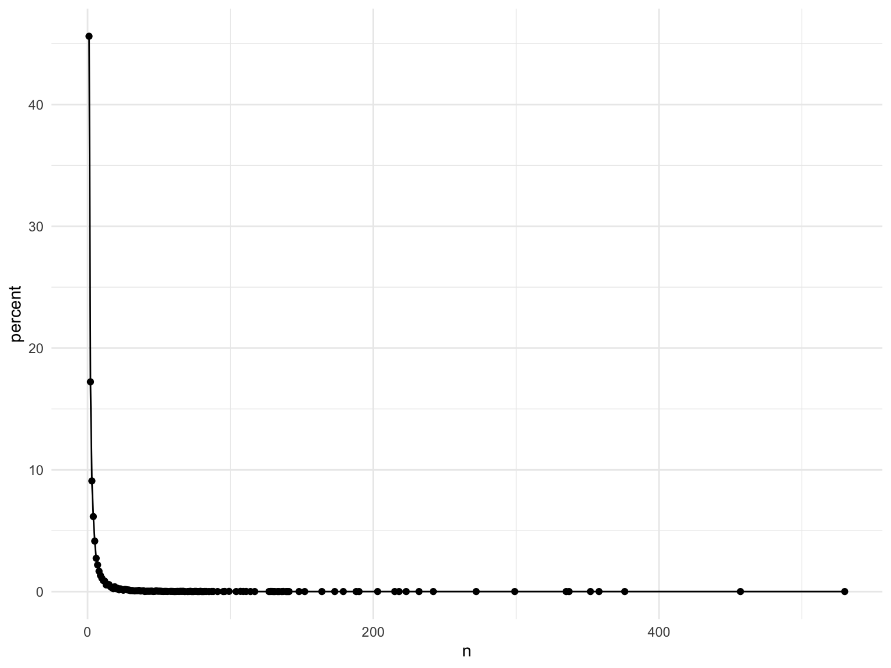

ufo_data = read_csv("./data/tidied_data_final.csv", na = "")## Parsed with column specification:
## cols(
## latitude = col_double(),
## longitude = col_double(),
## date_time = col_character(),
## city_description = col_character(),
## ufo_shape = col_character(),
## encounter_length = col_double(),
## described_encounter_length = col_character(),
## description = col_character(),
## date_documented = col_character(),
## country = col_character(),
## state = col_character(),
## city = col_character()
## )ufo =
ufo_data %>%
separate(date_time, into = c( "date","time"), sep = " " ) %>%
separate( date, into = c("month","day","year"), sep = "/") %>%
mutate(a = longitude, longitude = latitude, latitude = a)calculate the percentage of UFO appearence frequency in one city among all US cities
percentage_count = ufo %>%
filter(country == "USA") %>%
select(state, city, longitude, latitude) %>%
group_by(state, city, longitude, latitude) %>%
summarize(n = n()) %>%
arrange(n)
count_all = percentage_count %>%
nrow() %>%
as.numeric()
percent_calc = function(num){
count_num = percentage_count %>%
filter(n == num) %>%
nrow()
percent = count_num / count_all
percent
}
percent = percentage_count %>%
group_by(n) %>%
summarize(count = n()) %>%
mutate(percent = (count / count_all) * 100) %>%
# filter(n < 100) %>%
ggplot(aes(x = n, y = percent)) +
geom_point() +
geom_line() +
labs(
x = "UFO frequency",
y = "percentage in all US cities",
title = "Percentage of UFO Appearence Frequency among All US Cities"
)
percent
From the plot, we can see that majority of the cities in which UFO appeared has UFO appearance frequency less than 25 times. Therefore, it would be reasonable to separate the frequency map plot at n = 25.
For cities with UFO appearred less than 25 times:
below25 = ufo %>%
filter(country == "USA") %>%
select(state, city, longitude, latitude) %>%
group_by(state, city, longitude, latitude) %>%
summarize(n = n()) %>%
filter(n <= 25)
plot_below25 = leaflet(below25) %>%
addTiles() %>%
addCircleMarkers(
radius = ~n/10,
~latitude,
~longitude,
label = ~paste0(city, " ", state, ", ", n, " times seen UFO")
)
plot_below25In this plot, the size (radius) of circle markers corresponds to the frequency of UFO appearance in the city.
For cities with UFO appearred less than 25 times:
above25 = ufo %>%
filter(country == "USA") %>%
select(state, city, longitude, latitude) %>%
group_by(state, city, longitude, latitude) %>%
summarize(n = n()) %>%
filter(n > 25)
plot_above25 = leaflet(above25) %>%
addTiles() %>%
addCircleMarkers(
radius = ~n/100,
color = ~ifelse(n>300, "red", "navy"),
~latitude,
~longitude,
label = ~paste0(city, " ", state, ", ", n, " times seen UFO")
)
plot_above25In this plot, the size (radius) of circle markers corresponds to the frequency of UFO appearance in the city. 7 cities with UFO appeared more than 300 times are marked in red, while others in color navy.